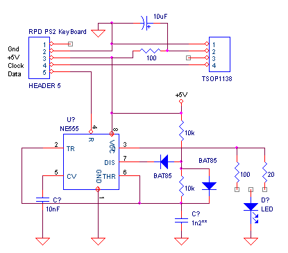
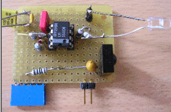
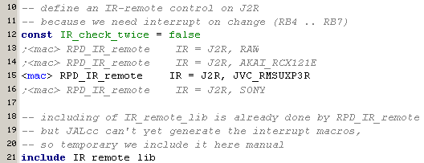
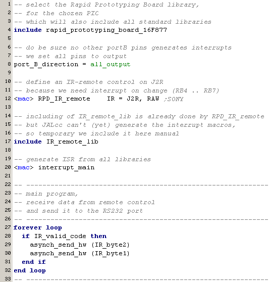

august 2005
RPD IR receiver/transmitter
The IR-receiver just consists of a standard TSOP1138. Note that the resistor and capacitor are very essential !! The IR-receiver should be connected to one of the pins with interrupt on change (normally B4 .. B7).
For the transmitter I've chozen a 555-timer as modulator. The reason is that the PWM output is not on one of the RB4 .. RB7 pins, and above we need some amplifier / transistor or whatsover, to get more than 20mA through the IR-LED. After testing the circuit, it seems that the 555 still has a large voltage drop, when drawing large currents. So it would be better to use an extra FET, to get a powerfull and well defined output.
There are 2 diodes (preferable shottkey) in the timing circuit of the 555-timer, to get a 50% duty cycle signal. The timing capacitor (1n2**) should be tuned to give th desired modulation frequency of 38 kHz.


JALcc macro call

JALcc use
see "SONY TV-remote RM883" below
JALcc macro expansion

Background Information
A lot of information can be found on the web. Unfortunatly I've to conclude that most of this information is not (completly) correct or my remotes are weird derivates. General features, like number of bits and kind of modulation are often correct, but startpuls, stoppuls, number of repeats doesn't match my remote controls.
Here some links
Some tips / problems I encountered
Analyzing a remote control
SONY TV-remote RM883
As an example a SONY TV_remote RM883 is used.
First start by reading one well suited key in the RAW mode. A well suited key, is a key that has direct action and no unwanted results if pressed many times. For a TV-remote this is for instance the CHANNEL-up key.
In the RAW mode, 3 bytes are sent, each time an edge is detected:
Here an example of the program I use

And here the results, captured with the boot-uploader (you can use any terminal program that can represent the received bytes in hex or decimal)
Ov = timer0 overflow, each count = 256 *51.2 us
T0 = timer0 value, real time is T0*51.2 us (if Ov=0)
00/FF = level SPACE/MARK
Ov T0 00 Ov T0 FF
=================
<== each sequence is repeated 4 times
7D 0E 00 <== time before pressing te key, has no meaning
00 2F FF <== startpuls 2.4 ms MARK
00 0B 00 00 0C FF <== bit 0 = 0 (600 uS high)
00 0B 00 00 18 FF <== bit 1 = 1 (1200 us high)
00 0B 00 00 0C FF
00 0B 00 00 0C FF
00 0B 00 00 18 FF
00 0B 00 00 0C FF
00 0B 00 00 0C FF
00 0B 00 00 18 FF
00 0B 00 00 0C FF
00 0B 00 00 0C FF
00 0B 00 00 0C FF
00 0B 00 00 0C FF <== bit 11 (so we've 12 bits data/cmd)
<== so the above code = 0b_0000_1001_0010 = 0x92 (volume +)
<== each sequence is repeated 4 times
02 03 00 <== pause between the 4 repeats (25 msec)
00 31 FF <== next sequence
-- transmit procedure for SONY TV-remote RM-883
-- START-PATTERN : 2.4 msec MARK
-- DATABITS : 12
-- 0-BIT : 600 usec SPACE, 600usec MARK
-- 1-BIT : 600 usec SPACE, 1200usec MARK
-- STOP-PATTERN : none
-- PAUSE Repeats : 25 msec
-- REPEAT COUNT : 4
The next step is to write or modify a receive routine, so you can watch the code of each key in hexadecimal presentation. Look in the IR-lib for some protocol that closes matches the protocol found in the previous state, and make a modified routine. Start again with the key you used in the RAW mode and verify that receiving and decoding is ok. Normally the receive routine will only return a valid code, if a valid sequence is received twice. In the first test phase (and even for some remotes) you can turn this doublecheck off, by
const IR_check_twice = falses
Now it's time to decode all the other keys from the remote.
0x090 channel +
0x091 channel -
0x092 volume +
0x093 volume -
The transmit part is far more easier then the receiver part. You already know which protocol matches most closely, so find it and modify it.
JVC audio RM-SUXP3R
On/Off = 0x17A3
CD next = 0x05AF
CD previous = 0x06AF
-- START-PATTERN : 8.5 msec MARK, 4 msec SPACE
-- DATABITS : 16
-- 0-BIT : 640 usec MARK, 400usec SPACE
-- 1-BIT : 640 usec MARK, 1480usec SPACE
-- STOP-PATTERN : 640 usec MARK
-- PAUSE Repeats : 20 msec SPACE
-- REPEAT COUNT : 3 (exception: on/off key is repeated 5 times)
00 A7 FF <== MARK 8.5 msec
00 4E 00 <== SPACE 4 msec
00 0C FF 00 1D 00 <== "1" = 640 us MARK, 1480us SPACE
00 0C FF 00 1D 00
00 0C FF 00 1D 00
00 0C FF 00 1D 00
00 0C FF 00 08 00 <== "0" = 640 us MARK, 400us SPACE
00 0C FF 00 1C 00
00 0C FF 00 08 00
00 0C FF 00 1C 00
00 0C FF 00 1D 00
00 0C FF 00 08 00
00 0C FF 00 1C 00
00 0C FF 00 08 00
00 0C FF 00 08 00
00 0C FF 00 07 00
00 0C FF 00 07 00
00 0C FF 00 07 00
00 0C FF <== closing 640us MARK
totalcode (CD +) = 0000_0101_1010_1111 = 0x_05AF
01 8D 00 <== 20ms SPACE between 3 repeats
00 0C FF 00 1D 00 <== next data repeat
00 0C FF 00 1D 00
===
00 A6 FF
00 4F 00
00 0B FF 00 1D 00
00 0C FF 00 1D 00
00 0C FF 00 1D 00
00 0B FF 00 1D 00
00 0C FF 00 07 00
00 0C FF 00 1D 00
00 0C FF 00 08 00
00 0C FF 00 1D 00
00 0C FF 00 1D 00
00 0C FF 00 07 00
00 0C FF 00 1D 00
00 0C FF 00 08 00
00 0C FF 00 08 00
00 0C FF 00 08 00
00 0B FF 00 08 00
00 0C FF 00 08 00
00 0C FF
01 8D 00 00 0C FF 00 1D 00 00 0C FF 00 1D 00 00 0C FF 00 1D 00 00 0C FF 00 1D 00 00 0B FF 00 08 00 00 0C FF 00 1D 00 00 0C FF 00 08 00 00 0C FF 00 1D 00 00 0C FF 00 1D 00 00 0B FF 00 08 00 00 0C FF 00 1D 00 00 0C FF 00 07 00 00 0C FF 00 08 00 00 0C FF 00 07 00 00 0C FF 00 08 00 00 0C FF 00 07 00 00 0C FF
Akai video RC-X121E
On/Off =
chan + = 0x_A7_58_77_89
chan - = 0x_A6_58_77_89
play = 0x_F9_06_77_89
pause = 0x_FC_03_77_89
-- START-PATTERN : 9 msec MARK, 4.5 msec SPACE
-- DATABITS : 32
-- 0-BIT : 640 usec MARK, 400usec SPACE
-- 1-BIT : 640 usec MARK, 1480usec SPACE
-- STOP-PATTERN : 640 usec MARK
-- PAUSE Repeats : none
-- REPEAT COUNT : none
This protocol looks very much alike JVC audio RM-SUXP3R, except it's 32 bits (instead of 16) and it has no repeats.
00 B1 FF <== MARK 9 msec
00 55 00 <== SPACE 4.5 msec
00 0D FF 00 1E 00 <== "1" = 640 us MARK, 1480us SPACE
00 0C FF 00 08 00 <== "0" = 640 us MARK, 400us SPACE
00 0D FF 00 08 00
00 0D FF 00 1E 00
00 0D FF 00 08 00
00 0D FF 00 08 00
00 0D FF 00 08 00
00 0D FF 00 1E 00
00 0D FF 00 1E 00
00 0D FF 00 1E 00
00 0D FF 00 1E 00
00 0D FF 00 08 00
00 0D FF 00 1E 00
00 0D FF 00 1E 00
00 0D FF 00 1E 00
00 0D FF 00 08 00
00 0D FF 00 08 00
00 0D FF 00 08 00
00 0D FF 00 08 00
00 0C FF 00 1E 00
00 0D FF 00 1E 00
00 0D FF 00 08 00
00 0D FF 00 1E 00
00 0D FF 00 08 00
00 0D FF 00 1E 00
00 0D FF 00 1E 00
00 0C FF 00 1E 00
00 0D FF 00 08 00
00 0D FF 00 08 00
00 0C FF 00 1E 00
00 0D FF 00 08 00
00 0D FF 00 1E 00
00 0D FF <== closing 640us MARK
totalcode (chan +) = 1010_0111_0101_1000_0111_0111_1000_1001 = 0xA7_58_77_89
Lego MindStorms
, 6 toetsen linksonder, linksboven
FA 1C 00
00 12 FF 00 0D 00
00 32 FF 00 0D 00
00 32 FF 00 0D 00
00 12 FF 00 0E 00
00 31 FF 00 0E 00
00 32 FF 00 0D 00
00 11 FF 00 0E 00
00 31 FF 00 0E 00
00 31 FF 00 0E 00
00 12 FF 00 0D 00
00 32 FF 00 0D 00
00 32 FF 00 0D 00
00 12 FF 00 0E 00
00 32 FF 00 0D 00
00 31 FF 00 0E 00
00 11 FF 00 0E 00
00 31 FF 00 0E 00
00 31 FF 00 0E 00
00 12 FF 00 0E 00
00 31 FF 00 0E 00
00 31 FF 00 0E 00
00 12 FF 00 0E 00
00 31 FF 00 0E 00
00 31 FF 00 0E 00
00 11 FF 00 0E 00
00 31 FF 00 0E 00
00 31 FF 00 0E 00
00 11 FF 00 0E 00
00 31 FF 00 0E 00
00 31 FF 00 0E 00
00 12 FF 00 0E 00
00 31 FF 00 0E 00
00 31 FF 00 0E 00
00 11 FF 00 0E 00
00 31 FF 00 0E 00
00 31 FF 00 0E 00
00 11 FF 00 0E 00
00 31 FF 00 0E 00
00 31 FF
PC Keyboard Liteon SK-7100
RC5 code ??
Toetsenbord: space
4F 0E 00
00 20 FF
00 31 00 00 0F FF
00 52 00 00 20 FF
00 20 00 00 10 FF
00 10 00 00 30 FF
01 0F 00
00 20 FF
00 31 00 00 0F FF
00 21 00 00 0F FF
00 21 00 00 20 FF
00 20 00 00 10 FF
00 10 00 00 20 FF
00 37 00 00 10 FF
00 10 00 00 0F FF
00 31 00 00 0F FF
00 11 00 00 0F FF
00 21 00 00 10 FF
00 10 00 00 0F FF
00 10 00 00 1F FF
00 11 00 00 0F FF
00 20 FF
00 31 00 00 0F FF
00 52 00 00 1F FF
00 21 00 00 0F FF
00 10 00 00 30 FF
05 5C 00 <== long space
00 20 FF
00 31 00 00 10 FF
00 20 00 00 10 FF
00 21 00 00 20 FF
00 21 00 00 10 FF
00 10 00 00 1F FF
00 37 00 00 0F FF
00 11 00 00 0F FF
00 31 00 00 10 FF
00 10 00 00 0F FF
00 21 00 00 10 FF
00 10 00 00 0F FF
00 11 00 00 20 FF
00 10 00 00 0F FF
=================================
JVC a-lot-remote in A-code PQ11202
============================
probably an RC5 code ??, no every "1" has equal time
Ov = timer0 overflow, each count = 256 *51.2 us
T0 = timer0 value
00/FF = level SPACE/MARK
Ov T0 00 Ov T0 FF
=================
<== each sequence is repeated 4 times
6A 34 00 <== start, can be very long SPACE
00 0C FF <== no special start mark
00 1C 00 00 0D FF <== bit0 = 1 (
00 1C 00 00 0C FF
00 07 00 00 0C FF <== bit2 = 0
00 07 00 00 0B FF
00 08 00 00 0B FF
00 09 00 00 0B FF
00 09 00 00 0B FF
00 08 00 00 0B FF
00 1F 00 00 0C FF
00 08 00 00 0B FF
00 08 00 00 0B FF
00 1F 00 00 0C FF
00 1C 00 00 0C FF
00 08 00 00 0B FF
00 0A 00 00 0B FF
00 09 00 00 0B FF <== bit15
<== so the above code = 0b_0001_1001_0000_0011 = 0x1903 (channel +)
<== pause between the 4 repeats (24 msec)
00 0D FF
00 1B 00 00 0D FF
Hitek DVD-recorder
=== setup-key ====
00 B2 FF <== MARK 9.1 msec
00 54 00 <== SPACE 4.3 msec
00 0D FF <== MARK 660us
00 08 00 00 0B FF 00 0A 00 00 0D FF 00 08 00 00 0D FF 00 08 00 00 0B FF =0000
00 20 00 00 0D FF 00 08 00 00 0B FF 00 0A 00 00 0D FF 00 08 00 00 0D FF =0001
00 1E 00 00 0D FF 00 08 00 00 0D FF 00 1E 00 00 0D FF 00 1E 00 00 0B FF =1101
00 0A 00 00 0D FF 00 1E 00 00 0B FF 00 20 00 00 0D FF 00 1E 00 00 0D FF =1110
00 1E 00 00 0B FF 00 20 00 00 0D FF 00 1E 00 00 0D FF 00 1E 00 00 0B FF =1111
00 20 00 00 0D FF 00 08 00 00 0B FF 00 20 00 00 0D FF 00 08 00 00 0B FF =0101
00 0A 00 00 0D FF 00 08 00 00 0D FF 00 08 00 00 0B FF 00 0A 00 00 0D FF =0000
00 08 00 00 0D FF 00 1E 00 00 0D FF 00 08 00 00 0D FF 00 1E 00 00 0D FF =1010
03 1F 00 <== SPACE 40 msec
00 B2 FF <== MARK 9.1 msec
00 29 00 <== SPACE 2.1 msec
00 0B FF <== MARK 550us
total code = 0x_A0_5F_ED_10 (just send once)
ZERO = 0x09 low = 460 us
ONE = 0x1F low = 1600 us
always 0x0C high = 610 us
FF 55
08 0A 08 08
20 08 0A 08
1E 08 1E 1E
0A 1E 20 1E
1E 20 1E 1E
20 08 20 08
0A 08 08 0A
08 1E 08 1E